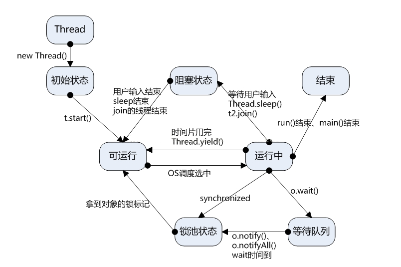
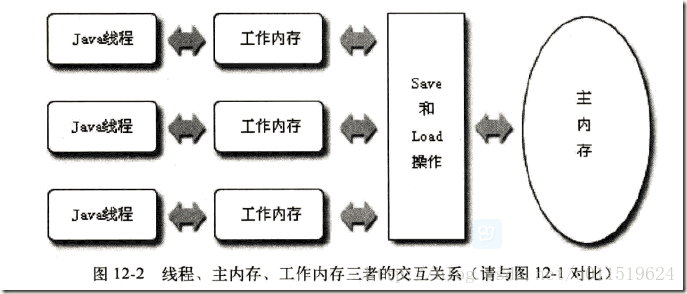

Java
多线程实现的几种方式（Thread、Runnable、Callable、线程池）及各自的特点
主要有三种实现多线程方式：
- 继承 Thread 类；（无返回值）
- 实现 Runnable 接口；（无返回值）
- 使用 ExecutorService、Callable、Future。（有返回值）
Java线程的状态及相互转换
线程的生命周期大体可分为5种状态：
新建(New)：新创建了一个线程对象。
可运行(Runnable)：线程对象创建后，其他线程（比如 main 线程）调用了该对象的 start() 方法。该状态的线程位于可运行线程池中，等待被线程调度选中，获取 CPU 的使用权。
运行(Running)：Running 的线程获得了 CPU 时间片（timeslice），执行程序代码。
阻塞(Blocked)：阻塞状态是指线程因为某种原因放弃了 CPU 使用权，也即让出了 CPU 时间片，暂时停止运行。直到线程进入可运行状态，才有机会再次获得 CPU 时间片转到运行状态。阻塞的情况分三种：
(一)等待阻塞：Running 的线程执行 o.wait() 方法，JVM 会把该线程放入等待队列（waitting queue)。
(二)同步阻塞：Running 的线程在获取对象的同步锁时，若该同步锁被别的线程占用，JVM 会把该线程放入锁池（lock pool)。
(三)其他阻塞：Running 的线程执行 Thread.sleep(long ms) 或 t.join() 方法，或者发出了 I/O 请求时，JVM 会把该线程置为阻塞状态。当 sleep() 状态超时、join() 等待线程终止或者超时、或者 I/O 处理完毕时，线程重新转入 Runnable 状态。死亡(Dead)：线程 run()、main() 方法执行结束，或者因异常退出了 run() 方法，则该线程结束生命周期。死亡的线程不可再次复生。

线程同步的几种方式
临界区
临界区对应着一个CcriticalSection对象，当线程需要访问保护数据时，调用EnterCriticalSection函数；当对保护数据的操作完成之后，调用LeaveCriticalSection函数释放对临界区对象的拥有权，以使另一个线程可以夺取临界区对象并访问受保护的数据。
PS:关键段对象会记录拥有该对象的线程句柄即其具有“线程所有权”概念，即进入代码段的线程在leave之前，可以重复进入关键代码区域。所以关键段可以用于线程间的互斥，但不可以用于同步（同步需要在一个线程进入，在另一个线程leave）
互斥量
互斥与临界区很相似，但是使用时相对复杂一些（互斥量为内核对象），不仅可以在同一应用程序的线程间实现同步，还可以在不同的进程间实现同步，从而实现资源的安全共享。
PS:1、由于也有线程所有权的概念，故互斥量也只能进行线程间的资源互斥访问，而不能用于线程同步；
2、由于互斥量是内核对象，因此其可以进行进程间通信，同时还具有一个很好的特性，就是在进程间通信时完美的解决了”遗弃”问题。
信号量
信号量的用法和互斥的用法很相似，不同的是它可以同一时刻允许多个线程访问同一个资源，PV操作。
PS:事件可以完美解决线程间的同步问题，同时信号量也属于内核对象，可用于进程间的通信。
事件
事件分为手动置位事件和自动置位事件。事件Event内部它包含一个使用计数（所有内核对象都有），一个布尔值表示是手动置位事件还是自动置位事件，另一个布尔值用来表示事件有无触发。由SetEvent()来触发，由ResetEvent()来设成未触发。
PS:事件是内核对象,可以解决线程间同步问题，因此也能解决互斥问题
线程间通信
多个线程在处理同一个资源，并且任务不同时，需要线程通信来帮助解决线程之间对同一个变量的使用或操作。即多个线程在操作同一份数据时，避免对同一共享变量的争夺，于是我们引出了等待唤醒机制：wait()、notify()。一个线程进行了规定操作后，就进入等待状态（wait）， 等待其他线程执行完他们的指定代码过后 再将其唤醒（notify）。
wait()：线程调用 wait() 方法，释放了它对锁的拥有权，然后等待其他的线程来通知它，通知的方式是 notify() 或 notifyAll()，这样它才能重新获得锁的拥有权和恢复执行。要确保调用 wait() 方法的时候拥有锁，即 wait() 方法的调用必须放在 synchronized 方法或 synchronized 块中。
notify()：唤醒一个等待当前对象的锁的线程。唤醒在此对象监视器上等待的单个线程。
notifAll()：唤醒在此对象监视器上等待的所有线程。
notify() 或 notifAll() 方法应该是被拥有对象的锁的线程所调用。如果多个线程在等待，它们中的一个将会选择被唤醒。这种选择是随意的，和具体实现有关。
volatile关键字
volatile：易变的、不稳定的。这个关键字的作用就是告诉编译器，只要是被此关键字修饰的变量都是易变的、不稳定的。
为什么是易变的呢？因为 volatile 所修饰的变量是直接存在主存中的，线程对变量的操作也是直接反映在主存中，所以说其是易变的。

图片来自《深入理解Java虚拟机》
JMM 中的内存分为主内存和工作内存，其中主内存是所有线程共享的，而工作内存是每个线程独立分配的，各个线程的工作内存之间相互独立、互不可见。在线程启动的时候，虚拟机为每个内存分配了一块工作内存，不仅包含了线程内部定义的局部变量，也包含了线程所需要的共享变量的副本，当然这是为了提高执行效率，读副本的比直接读主内存更快。
那么对于 volatile 修饰的变量（共享变量）来说，在工作内存发生了变化后，必须要马上写到主内存中，而线程读取到是 volatile 修饰的变量时，必须去主内存中去获取最新的值，而不是读工作内存中主内存的副本，这就有效的保证了线程之间变量的可见性。
volatile 特点：
- 内存可见性。即线程 A 对 volatile 变量的修改，其他线程获取的 volatile 变量都是最新的，但不能保证变量具有原子性。
- 禁止指令重排序。
重排序是啥？举个栗子：
1 | public class SimpleHappenBefore { |
7.J.U.C包的JDK源码（CAS、AQS、ConcurrentHashMap、ThreadLocal、CyclicBarrier、CountDownLatch、Atom、阻塞队列等等）
10.集合框架底层JDK实现（HashMap和Hashtable区别、Set、List等等）
11.IO（writer、reader、InputStream、OutputStream）、NIO等
四种引用及其区别和使用场景
强引用（StrongReference）
如果一个对象具有强引用，那垃圾回收器（Garbage Collection，GC）绝不会回收它。当内存空间不足，JVM 宁愿抛出 OutOfMemoryError 错误，使程序异常终止，也不会靠随意回收具有强引用的对象来解决内存不足的问题。
1 | // 强引用 |
1 | // 在一个方法的内部有一个强引用 |
1 | private transient Object[] elementData; |
软引用（SoftReference）
如果一个对象只具有软引用，当内存空间足够，GC 不会回收它；但内存空间不足时，就会回收这些对象的内存。只要 GC 没有回收它，该对象就可以被程序使用。软引用可用来实现内存敏感的高速缓存。
软引用可以和引用队列（ReferenceQueue）联合使用，如果软引用所引用的对象被 GC 回收，JVM 就会把这个软引用加入到与之关联的引用队列中。
1 | // 强引用 |
实际场景：按浏览器的后退按钮时，这个后退时显示的网页内容是重新进行请求还是从缓存中取出呢？
可能的实现策略：
- 如果一个网页在浏览结束时就进行内容的回收，则按后退查看前面浏览过的页面时，需要重新构建。
- 如果将浏览过的网页存储到内存中会造成内存的大量浪费，甚至会造成内存溢出。
1 | // 获取页面进行浏览 |
弱引用（WeakReference）
弱引用与软引用的区别：只具有弱引用的对象拥有更短暂的生命周期。在 GC 线程扫描它所管辖的内存区域的过程中，一旦发现了只具有弱引用的对象，不管当前内存空间足够与否，都会回收它的内存。不过，由于 GC 是一个优先级很低的线程，因此不一定会很快发现那些只具有弱引用的对象。
弱引用可以和引用队列联合使用，如果弱引用所引用的对象被垃圾回收，JVM 就会把这个弱引用加入到与之关联的引用队列中。
当你想引用一个对象，但是这个对象有自己的生命周期，你不想介入这个对象的生命周期，这时候你就可以用弱引用。
1 | // 强引用 |
虚引用（PhantomReference）
“虚引用”顾名思义，就是形同虚设，与其他几种引用都不同，虚引用并不会决定对象的生命周期。如果一个对象仅持有虚引用，那么它就和没有任何引用一样，在任何时候都可能被 GC 回收。主要用来跟踪对象被 GC 回收的活动。
虚引用与软引用和弱引用的区别：虚引用必须和引用队列联合使用。当 GC 准备回收一个对象时，如果发现它还有虚引用，就会在回收对象的内存之前，把这个虚引用加入到与之关联的引用队列中。
1 | ReferenceQueue queue = new ReferenceQueue(); |
可以通过判断引用队列中是否加入了虚引用，来了解被引用的对象是否将要被垃圾回收。如果发现某个虚引用已经被加入到引用队列，那么就可以在所引用的对象的内存被回收之前采取必要的行动。
对象序列化与反序列化
序列化：把堆内存中的 Java 对象数据，通过某种方式把对象存储到磁盘文件中或者传递给其他网络节点（在网络上传输）。这个过程称为序列化。通俗来说就是将数据结构或对象转换成二进制串的过程。
反序列化：把磁盘文件中的对象数据或者把网络节点上的对象数据，恢复成Java对象模型的过程。也就是将在序列化过程中所生成的二进制串转换成数据结构或者对象的过程。
为什么要做序列化？
- 在分布式系统中，此时需要把对象在网络上传输，就得把对象数据转换为二进制形式，需要共享的数据的 Java 对象，都得做序列化。
- 服务器钝化：如果服务器发现某些对象好久没活动了，那么服务器就会把这些内存中的对象持久化在本地磁盘文件中（Java 对象转换为二进制文件）；如果服务器发现某些对象需要活动时，先去内存中寻找，找不到再去磁盘文件中反序列化我们的对象数据，恢复成 Java 对象。这样能节省服务器内存。
18.内存分区
19.垃圾回收（三种垃圾回收算法、新生代老生代、垃圾回收器、G1优点等等）
20.内存溢出
21.内存泄漏排查
22.JVM调优
类加载机制
JVM类加载机制分为五个部分：加载，验证，准备，解析，初始化。
加载
加载是类加载过程中的一个阶段，这个阶段会在内存中生成一个代表这个类的java.lang.Class对象，作为方法区这个类的各种数据的入口。注意这里不一定非得要从一个Class文件获取，这里既可以从ZIP包中读取（比如从jar包和war包中读取），也可以在运行时计算生成（动态代理），也可以由其它文件生成（比如将JSP文件转换成对应的Class类）。
验证
这一阶段的主要目的是为了确保Class文件的字节流中包含的信息是否符合当前虚拟机的要求，并且不会危害虚拟机自身的安全。
准备
准备阶段是正式为类变量分配内存并设置类变量的初始值阶段，即在方法区中分配这些变量所使用的内存空间。注意这里所说的初始值概念，比如一个类变量定义为：
1 | public static int v = 8080; |
实际上变量v在准备阶段过后的初始值为0而不是8080，将v赋值为8080的putstatic指令是程序被编译后，存放于类构造器
但是注意如果声明为：
public static final int v = 8080;
在编译阶段会为v生成ConstantValue属性，在准备阶段虚拟机会根据ConstantValue属性将v赋值为8080。
解析
解析阶段是指虚拟机将常量池中的符号引用替换为直接引用的过程。符号引用就是class文件中的：
CONSTANT_Class_info
CONSTANT_Field_info
CONSTANT_Method_info
等类型的常量。
下面我们解释一下符号引用和直接引用的概念：
符号引用与虚拟机实现的布局无关，引用的目标并不一定要已经加载到内存中。各种虚拟机实现的内存布局可以各不相同，但是它们能接受的符号引用必须是一致的，因为符号引用的字面量形式明确定义在Java虚拟机规范的Class文件格式中。
直接引用可以是指向目标的指针，相对偏移量或是一个能间接定位到目标的句柄。如果有了直接引用，那引用的目标必定已经在内存中存在。
初始化
初始化阶段是类加载最后一个阶段，前面的类加载阶段之后，除了在加载阶段可以自定义类加载器以外，其它操作都由JVM主导。到了初始阶段，才开始真正执行类中定义的Java程序代码。
初始化阶段是执行类构造器
注意以下几种情况不会执行类初始化：
- 通过子类引用父类的静态字段，只会触发父类的初始化，而不会触发子类的初始化。
- 定义对象数组，不会触发该类的初始化。
- 常量在编译期间会存入调用类的常量池中，本质上并没有直接引用定义常量的类，不会触发定义常量所在的类。
- 通过类名获取Class对象，不会触发类的初始化。
- 通过Class.forName加载指定类时，如果指定参数initialize为false时，也不会触发类初始化，其实这个参数是告诉虚拟机，是否要对类进行初始化。
- 通过ClassLoader默认的loadClass方法，也不会触发初始化动作。
24.双亲委派
25.内存模型及线程
26.锁优化
27.全局唯一有序 ID。 snowflake ，timestamp 加前面，然后后面加上机器 id 等
28.设计模式：几种单例模式实现（手撸）、其他几种常见的设计模式（JDK中具体点）、项目中怎么用了
28.简单介绍一下HashMap (其中包括底层数据结构、为什么默认长度的为16、线程安全问题等)
28.介绍一下红黑树 (因为HashMap在JDK1.8中数据结构加入了红黑树)
28.简单说一下ConcurrentHashMap (主要是与HashMap的区别、怎么实现线程安全的)
28.简单介绍一下AOP、实现动态代理的方式
28.说一下Dom4J以及SAX的区别，什么时候用，怎么用
28.说一下Maven，为什么要用Maven
28.介绍一下NIO，怎么使用NIO
一系列的并发问题
有两台服务器同时购买同一件东西，不在数据库端、服务器端加锁，怎么处理并发。
如果让你设计一块缓存，你会怎么设计？（这个问题我感觉很难，他会问你数据结构以及时间复杂度。而且缓存存入的东西不能有逻辑运算，没有逻辑运算就意味着你在调用的时候怎么对准确的调用到存入的信息。并且在内存满了的时候你会怎么设计清除掉垃圾数据。）
Java 程序的运行原理
普通可执行程序的运行原理
从浏览器发出请求开始，到服务端应用接受到请求为止的过程
单点登录
正向代理与反向代理
反爬机制，爬虫模拟浏览器行为
cglib 方法拦截
动态代理
依赖注入
Servlet 的本质
TCP 长连接。心跳包，websocket
Netty 百万级长连接优化
DSL 解析到 AST 。lexer 和 parser
JVM 相关。（你读过 GC 相关源码吗？）
代码规范，包命名规范
读过的 Java 书籍。（四大名著之类）
推荐：设计模式那点事、疯狂Java讲义、Java并发编程实战、深入理解Java虚拟机、Java编程思想
项目和实习：
一定要把自己做的东西从头到尾顺一遍。
难点在哪里，怎么解决的，学到了什么，技术亮点在哪里，这些事经常问的。
常问的问题，像并发量多少，怎么优化这些也要早测试早作准备。
千万不要到时候再想，这会让面试官感觉你对自己做的都不熟悉。最好可以自己画一下架构图，讲的时候思路更清晰。